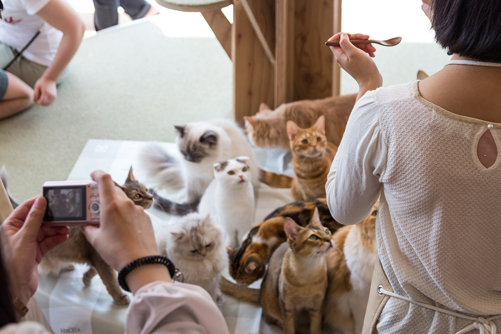
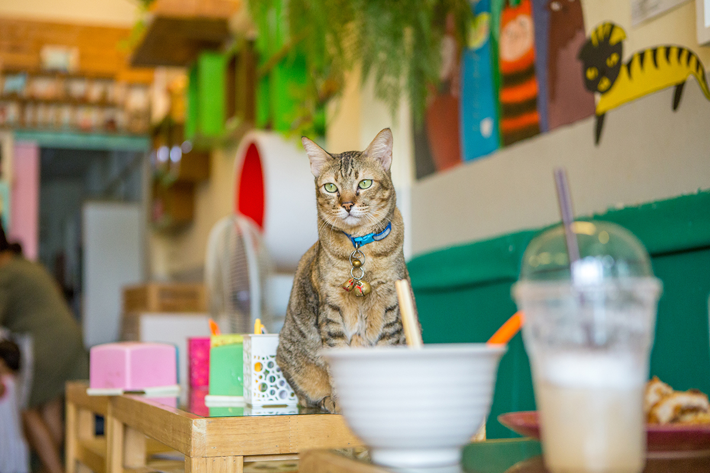
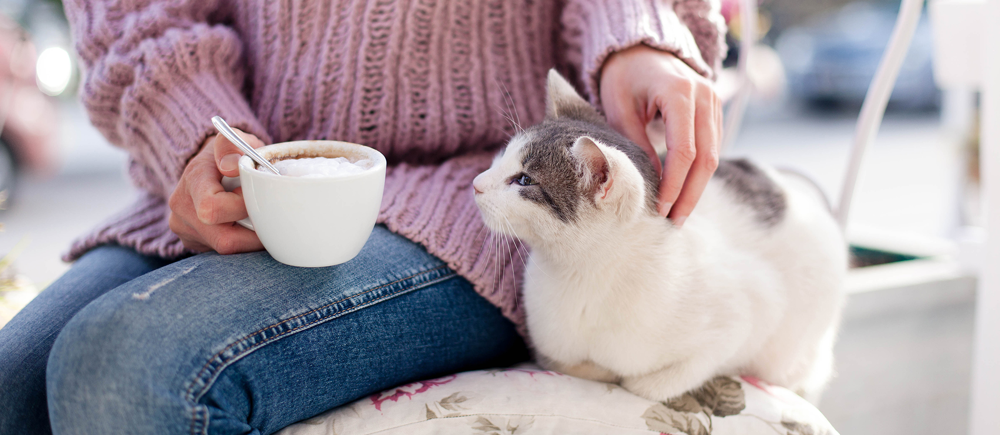

Photo Gallery


welcome to Mako's cafe! Home of the best coffe and best cats around! ^w^
It’s simple. A cat cafe is a combination of all things good; cats, coffee, and a relaxing cafe environment. You can relax and pet cats, and it’s great socialization for them too! The cats are adoptable, which means if you fall in love, you can apply to take them home!
A cat cafe is perfect for cat lovers who need a feline fix. Whether you can't have cats at home, or you've already got some and are looking for more, we've always got great cats here!